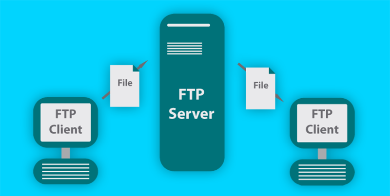

Las principales características del protocolo FTP transferencias de archivos son:

Arquitectura cliente-servidor: Para intercambiar la información es indispensable contar con un servidor que proporcionara el servicio para almacenar los archivos compartidos o transferidos de tal manera que los clientes podrán acceder a él para intercambiar información.
Acceso privado o público: Permite el acceso al servidor a usuarios identificados tanto para usuarios anónimos o públicos.
Gestión del sistema de ficheros similar a los de sistemas Linux: El administrador del servicio podrá establecer permisos de escritura y lectura sobre los archivos y carpetas, pudiendo también asignar un directorio principal a cada uno de los usuarios. Además, existirá la posibilidad de establecer unas cuotas o límites de almacenamiento a cada cuenta de usuario.
Diferentes modos de conexión: Los modos de conexión definirán las forma en la que se gestionarán los puertos usados por el servidor y los clientes para comunicarse.
Diferentes tipos de transferencia: La transferencia se podrá realizar en dos modos: ASCII es el modo de transmisión de archivos de texto o de modo binario estos incluyen imagenes, videos, fucheros comprimidos